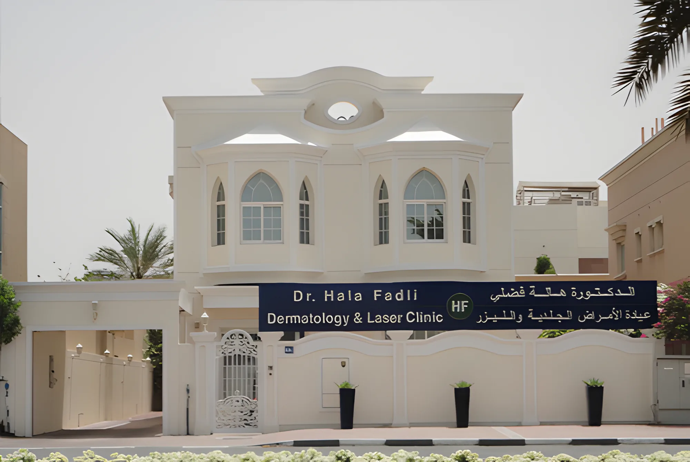
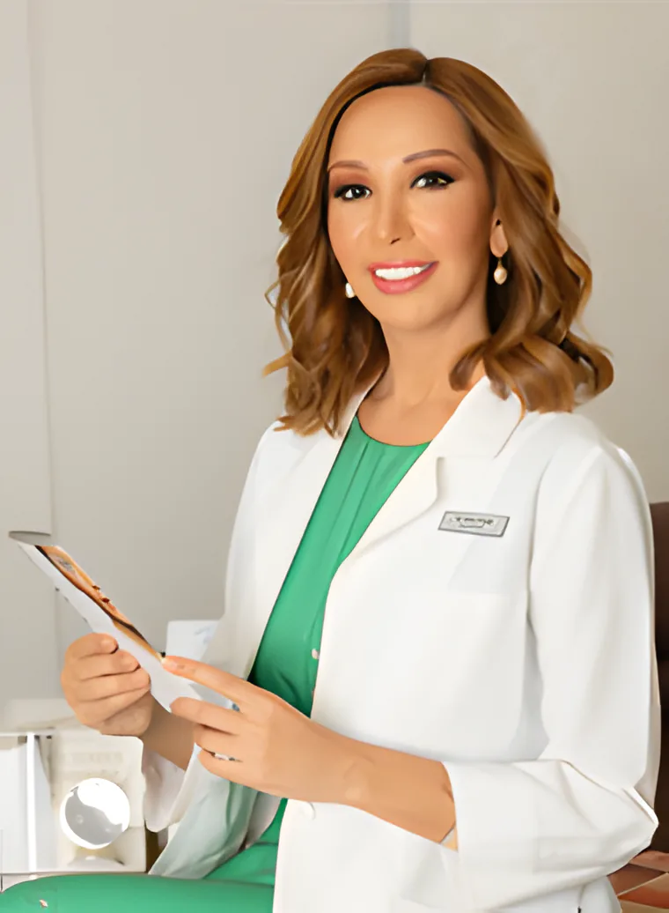

احجز بالهاتف
اتصل على 04 346 5542 أو راسلنا على manager@halafadli.com. العيادة مفتوحة من الأحد إلى الجمعة، مقابل تشويترام على شارع الوصل.
الأمراض الجلدية والتجميل في فيلا على شارع الوصل، أم سقيم. أمراض البشرة والشعر والأظافر، وكل مريض يبدأ باستشارة مع الدكتورة هالة نفسها.

مفتوح
الثلاثة من كلية الطب بجامعة ويلز، كارديف، بريطانيا.
العيادة
تفحصك وتأخذ تاريخك الطبي وتعطيك رأيها بصراحة قبل أي علاج، وتتابع معك بعد العلاج.
الاستشارة جلسة مريحة تتبادل فيها المعلومات مع الدكتورة. هكذا يكون الموعد الأول.
اتصل على 04 346 5542 أو راسلنا على manager@halafadli.com. العيادة مفتوحة من الأحد إلى الجمعة، مقابل تشويترام على شارع الوصل.

تخبر الدكتورة هالة بما يزعجك أو ما تريد تغييره، وتأخذ تاريخك الطبي وتسألك عن النتيجة التي تتوقعها.
تفحصك وتشرح لك الخيارات والمخاطر والحدود، وتقول لك بصراحة ما تنصح به. وتعرف التكلفة قبل أن تقرر.
عندما تقرر، يُحجز العلاج مع الدكتورة هالة، وتستمر متابعتها لك في الفترة التي تلي العلاج.

الدكتورة هالة فضلي، استشارية الأمراض الجلدية والتجميل.
MBChB, DDS, MSc, PhD in Dermatology (UK)
درست الأمراض الجلدية في ويلز وعملت في مستشفى جامعة ويلز في كارديف ومستشفى رويال غوينت، ثم تدربت على التجميل الجلدي في عيادات خاصة في كارديف وشارع هارلي في لندن وبرلين، قبل أن تفتح عيادتها في دبي.
من عائلة أطباء: والدها طبيب نفسي ووالدتها طبيبة نساء وولادة، ولكل منهما عيادة في دبي.
يعرفها مشاهدو تلفزيون دبي من برنامج «ظهيرة الجمعة»، حيث أجابت لسنوات على أسئلة البشرة والشعر والأظافر. وتحدثت على سكاي نيوز عن التوتر والصدفية، وكتبت في زهرة الخليج ومجلة A&E.


فيلا من طابقين على شارع الوصل في جميرا، لها بوابتها الخاصة وصالة انتظار هادئة وغرفة استشارة الدكتورة.

فيلا 929، شارع الوصل، أم سقيم 2، دبي
مقابل سوبرماركت تشويترام. ابحث عن اللوحة الكحلية على الفيلا البيضاء.
| الأحد | 10 ص – 7 م |
| الاثنين | 10 ص – 7 م |
| الثلاثاء | 10 ص – 7 م |
| الأربعاء | 10 ص – 7 م |
| الخميس | 10 ص – 7 م |
| الجمعة | 10 ص – 6 م |
| السبت | مغلق |
أو راسلنا على manager@halafadli.com